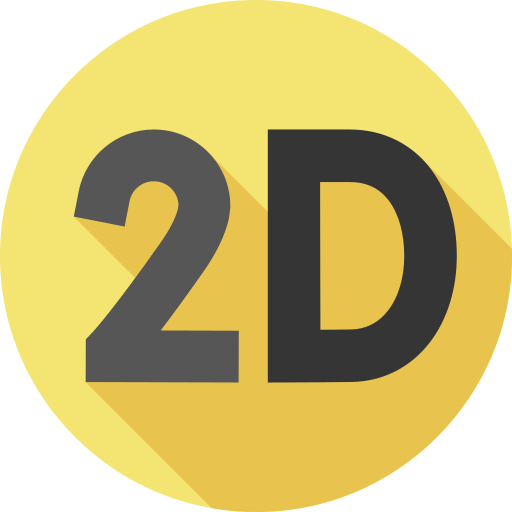
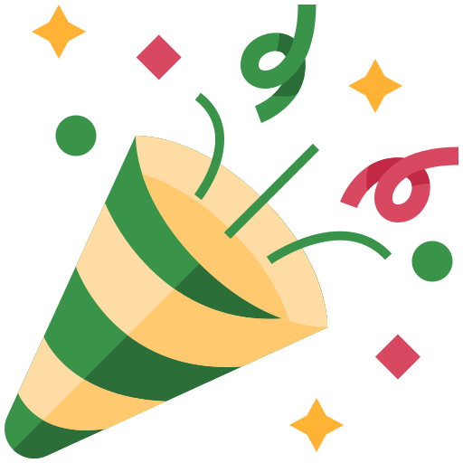
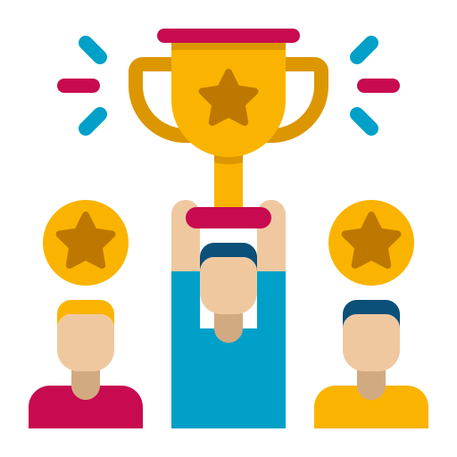

Una misteriosa energía cósmica ha alterado las fronteras del planeta. ¡Expande tu hábitat antes de que se agote el tiempo!
EL CONCEPTO
Pitch
Split Lands es un frenético party game competitivo 2D en vista top-down para 2 jugadores en pantalla compartida. El mapa comienza dividido por la mitad entre dos ecosistemas rivales que no pueden cruzar la frontera enemiga directamente.
Para ganar, deberás pintar y "comerte" el 90% del territorio (o poseer la mayoría al terminar los 3 minutos) utilizando tu habilidad básica, habilidades definitivas y los locos objetos que transportan los animales salvajes que cruzan el escenario.
FICHA TÉCNICA
Género y Plataforma

Arte 2D Cartoon

Party Game

Competitivo 1v1
Web (Itch.io) · PC Windows · Nintendo Switch
JUGABILIDAD
Características Principales
Invasión Visual de Biomas: Cada disparo o habilidad hace que tu ecosistema (Playa, Bosque de Sakura, Jungla o Cueva) se coma literalmente el terreno rival.
Fauna Repartidora con IA: Animales controlados por IA cruzan el mapa llevando recursos, además de eventos especiales como el codiciado Pájaro Dorado.
Habilidades Únicas: Cada campeón posee un ataque básico contextual, una habilidad táctica en cooldown y una Ultimate devastadora.
Salud y Aturdimiento: Cuenta con un medidor de 3 vidas; perderlas ante objetos ofensivos te dejará 5 segundos aturdido a merced de la pintura rival.
VERSIÓN BETA WEBGL
¡Juega la Demo de Split Lands!
Prueba nuestra versión jugable directamente en el navegador o descárgala desde nuestra página oficial de Itch.io.
Split Lands — WebGL Build
Disponible para 2 jugadores en un mismo teclado (WASD + Flechas) o con mandos.
Haz clic en cualquier imagen para ampliarla a pantalla completa.
Representantes de los Biomas
Selecciona a tu campeón: cada especie posee estadísticas, personalidad y un set de 3 habilidades adaptado a tu estilo de juego.
Bioma: Playa · Anfibio
BUBBLE
Personalidad: Inquieto, escurridizo y desafiante.
Especialista en movilidad acuática. Se desplaza a gran velocidad por la arena pintando terreno a su paso y controlando la trayectoria de sus proyectiles.
Velocidad
Área de Pintura
Control / Sabotaje
HABILIDAD BÁSICA
Salpicadura Lineal
Ataque rápido, alargado y fino hacia el frente que pinta huecos estratégicos en el terreno rival o recoge objetos cercanos.
HABILIDAD ESPECIAL (Cooldown)
Búmeran Acuático
Lanza un proyectil en forma de bumerán que pinta el suelo y daña al enemigo. Segundos después, regresa siguiendo el movimiento de Bubble.
HABILIDAD DEFINITIVA (ULTI)
Vórtice de Remolinos
Invoca un círculo de remolinos a su alrededor que se mueven con él, pintando todo a su paso y explotando burbujas.
Arsenal y Controles
Filtra los objetos que transportan los animales por el mapa y consulta el sistema de controles adaptativos.
💣
Bomb-a
Explota pintando un gran área circular alrededor del punto de impacto.
🎉
Cañón Discreto
Pinta una amplia zona en cono frente al jugador (de discreto solo tiene el nombre).
🔫
Pistola Torpedo
Cuenta con hasta 3 disparos que estallan en círculo al tocar los límites exteriores del mapa.
🐌
Caracol de Tinta
Agente autónomo que avanza pintando el campo enemigo hasta que el rival se acerca a detenerlo.
⛏️
Taladro Minero
Permite cruzar temporalmente la frontera hacia el terreno enemigo para robarle objetos.
🐝
Panal de Abejas
Libera un enjambre en territorio rival que ralentiza drásticamente el movimiento del oponente.
🌪️
Lanza Tornados
Genera un vórtice que ancla al rival e impide que pueda alejarse de esa zona.
🧃
Zumo Mágico Feliz
Invierte los controles de dirección del jugador rival durante varios segundos de caos total.
🧊
Jaula de Cristal
Encierra temporalmente al enemigo dentro del perímetro en el que se encontraba.
Pala Improvisada
Desentierra un objeto aleatorio cuya rareza mejora según la zona excavada.
🗿
Tótem del Rey Mono
El Rey Mono envía a sus secuaces a invadir el lado rival y robar sus objetos.
🐿️
Fiesta de las Ardillas
Inunda el mapa de ardillas veloces cargadas de recursos. ¡Atrápalas si puedes!
🦀
Trampa para Cangrejos
Detiene automáticamente a los cangrejos repartidores cuando pasan por tu territorio.
Lira del Océano
Cautiva con su música a los animalitos cercanos, haciendo que se acerquen a ti.
🍏
Fruta Podrida
Espanta a todos los animales repartidores del campo enemigo durante un tiempo.
🍹
Lluvia de Zumo
Protege tu ecosistema haciendo que tu porcentaje de terreno no pueda menguar durante unos segundos.
🌫️
Niebla Embotellada
Cubre toda la pantalla con una densa niebla que reduce la visibilidad de ambos jugadores.
❄️
Tormenta de Nieve
Desata una ventisca en el bioma rival que deja al enemigo congelado e inmóvil.
☀️
Sequía
Bloquea temporalmente la capacidad de pintar suelo para ambos jugadores.
🐚
Concha Fuerte y Sandías
Proyectiles que ignoran fronteras o caen del cielo para restar las 3 vidas del rival y aturdirlo 5s.
Esquemas de Control Inteligentes y Accesibles
El juego detecta automáticamente si hay mandos conectados. Además, en teclado invertimos el orden de teclas en Arrows respecto a WASD para que ambos jugadores utilicen exactamente los mismos dedos de la mano.
W A S DMovimiento
Tecla FBásica / Coger y Lanzar Objeto
Tecla GHabilidad Especial
Tecla HHabilidad Definitiva (Ulti)
EspacioPausa Común
Devlog y Hoja de Ruta
12 semanas de desarrollo ágil mediante Sprints en Trello y control de versiones en GitHub.
SEMANAS 1 - 3 · COMPLETADO
Hito 1: Prototipo Funcional (Core Loop)
Configuración del proyecto en Unity 2D y repositorio en GitHub. Primeros bocetos de personajes (Bubble, Robin, Tuqui y Fluflu), mapas y UI. Implementación del movimiento (`Movement`, `PlayerInputController`) y validación de la mecánica central: un escenario dividido en dos colores donde se conquista territorio rival usando `BasicSkill`, `DashNSplash` y la primera `Bomb_a`.
SEMANAS 4 - 7 · COMPLETADO
Hito 2: Mecánicas Completadas y Arte Alpha
Integración del `SkillManager` con las 3 habilidades de cada personaje (básica, especial y ultimate) y del `ItemsManager` para la recogida y lanzamiento de recursos. Sustitución de placeholders por los spritesheets finales animados frame a frame (6 frames de ciclo de andar dibujados a mano), e incorporación de música dinámica y efectos sonoros (SFX).
SEMANAS 8 - 10 · VERSIÓN ACTUAL
Hito 3: Versión Beta y Cierre de Contenido
Implementación completa de todo el arte 2D, menús de interfaz (Pantalla de Título, Selección 1v1, HUD con medidor en tiempo real, Pausa con esquema de controles, Victoria y Tienda In-Game). Flujo de escenas completo, congelación de nuevas funcionalidades (Feature Freeze) para pulir el balance competitivo y optimización para navegador web.
SEMANAS 11 - 12 · GOLD MASTER
Hito 4: Lanzamiento Oficial (Release)
Sesiones intensivas de QA y playtesting para eliminar cualquier error bloqueante. Actualización final del GDD v2.0.0, despliegue del portfolio oficial de Slip Team, campaña en redes sociales y publicación de la build estable en Itch.io.
Marketing y Modelo de Negocio
Estrategia comercial accesible, análisis competitivo y presencia activa en redes sociales.
AUDIENCIA
Público Objetivo
Dirigido a jugadores casuales y grupos de amigos de 8 a 40 años que buscan partidas locales rápidas y llenas de risas. Nos enfocamos en dos perfiles compradores:
Anfitrión Social (18-35 años): Organiza tardes de juego en casa o residencias universitarias y adquiere el juego base y DLCs de biomas para sorprender a sus invitados.
Jugador Expresivo / Coleccionista (8-24 años): Atraído por el carisma cartoon de Bubble, Robin, Tuqui o Fluflu, adquiere skins cosméticas para lucirlas en pantalla compartida.
VENTAJA COMPETITIVA
Juegos Similares y ¿En qué somos mejores?
Nos inspiramos en referentes de sofá como Overcooked, Naughty Gnomes o Castle Crashers, y en el arte de Friday Night Funkin', Cuphead y Animal Jam. ¿Qué hace único y superior a Split Lands?
Cero "Screen-Cheating" y Lectura Instantánea: A diferencia de otros juegos en pantalla dividida donde miras la cámara del rival, aquí el escenario entero es único y el propio suelo pintado actúa como marcador vivo.
100% Jugable en un solo Teclado sin Mandos: Mientras que la competencia exige comprar mandos extra, nuestro sistema simétrico WASD + Arrows invertido permite a 2 personas jugar en cualquier portátil al instante.
Frontera Dinámica e IA Viva: No son niveles estáticos; la frontera física cambia cada segundo y los recursos dependen de animales salvajes con IA propia.
Precio Imbatible y Ético: Por solo 9,99 € (frente a los 25-40 € de otros party games) ofrecemos multijugador infinito sin mecánicas Pay-to-Win.
MONETIZACIÓN B2P
Estrategia, Plataformas y Precios
Modelo Buy-to-Play (B2P) reducido que fomenta la compra compartida, combinado con una Tienda In-Game de cosméticos (Robin Invernal, Bubble Neón) y DLCs:
🎮 Juego Base (PC Windows / Switch Digital)9,99 €
💿 Edición Física (Nintendo Switch)14,99 €
🌴 DLC "Aventura en la Jungla" (Bioma + Eventos)5,99 €
✨ Pack de Skins (4 aspectos cosméticos)2,99 €
🌐 Versión Demo Web (Itch.io con Tienda)Gratuita
Comunidad en Vivo · Nuestras Publicaciones (@slipteamdev)
Sigue el día a día del desarrollo, avances de arte y tráilers directamente desde nuestras cuentas oficiales de Instagram y X.
Programación en Unity: Arquitectura modular desacoplada en sistemas de Controles (`PlayerInputManager`, `Movement`), Habilidades (`SkillManager`, `BasicSkill`, `DashNSplash`) y Controladores de Objetos (`ItemsManager`, `PlayerItemsManager`), junto a máquinas de estados para la IA de los animales repartidores.
Arte 2D y Animación: Ilustración original con lineart expresivo, turnarounds de referencia y ciclos de animación dibujados a mano de 6 frames (con detalles como las huellas en las patas de Robin o las branquias de Bubble).
Diseño Sonoro Dinámico: BSO con marimbas y percusión que acelera su tempo en los últimos 30 segundos de partida, acompañada de 4 capas de SFX para un feedback instantáneo.
QA Y MÉTRICAS
Resultados y Feedback
Accesibilidad Total: Implementación de inversión simétrica de teclas en el esquema Arrows para igualar la ergonomía con WASD, pausa compartida en la barra espaciadora y selector de tamaño de fuente en el menú de Ajustes.
Balanceo Competitivo: Ajuste de los tiempos de recarga de las habilidades Definitivas según su impacto en el mapa y límite de inventario a 1 espacio táctico para evitar el spam de objetos.
Rendimiento Web y PC: 60 FPS estables con lectura visual inmediata de la frontera en formato de pantalla única top-down.
Sobre Nosotros · Slip Team
Un estudio indie multidisciplinar de 6 desarrolladores unidos por la creatividad, el caos divertido y el cuidado por el detalle.
Miembros del Equipo
Ángel
Jefe de Programación y Arquitectura
Lidera las decisiones técnicas del software, la estructura modular en Unity y el repositorio.
Lucas
Programador, Jugabilidad y Audio
Implementación de mecánicas de combate, objetos interactivos y diseño sonoro.
Miguel
Programador y Jefe de Accesibilidad
Sistemas de control adaptativos, integración de mecánicas y estándares de accesibilidad.
Sara
Jefa de Animación, Planificación e Interfaces
Animación 2D frame a frame, diseño de UI/UX y planificación de sprints e hitos del proyecto.
Claudia
Arte, Animación y Jefa de Narración
Diseño de personajes, lore de los ecosistemas, estimación y apoyo en animación 2D.
Irene
Jefa de Arte, Diseño y Coordinación
Dirección de arte 2D (escenarios y concept art), coordinación general del equipo (Project Manager) y apoyo en animación.
IDENTIDAD DE MARCA
Misión, Visión y Valores
Nuestra Misión: Aportar a la industria videojuegos accesibles, vibrantes y llenos de energía que vuelvan a reunir a amigos y familiares frente a una misma pantalla.
Nuestra Visión: Consolidarnos como un estudio indie referente en party games multijugador en PC, Web y consolas portátiles como Nintendo Switch.
Valores de Slip Team:Diversión, Caos, Entusiasmo, Optimismo, Energía y Frescura, defendiendo siempre una monetización ética sin Pay-to-Win y un desarrollo sostenible.
ORIGEN
Historia del Proyecto
¡Nuestro juego nació de un malentendido épico! Al constituir el estudio, un miembro del equipo pensó que nos llamábamos Split Team en lugar de Slip Team.
Aquella confusión lingüística encendió la chispa creativa: decidimos convertir la división (Split) en nuestra mecánica central, dando vida a Split Lands y su guerra de ecosistemas por pintar y conquistar la otra mitad de la pantalla.